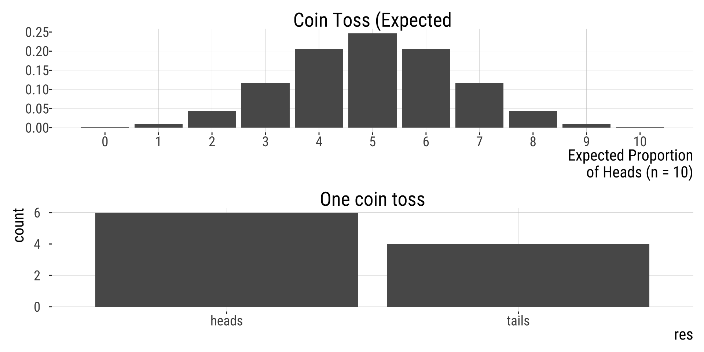
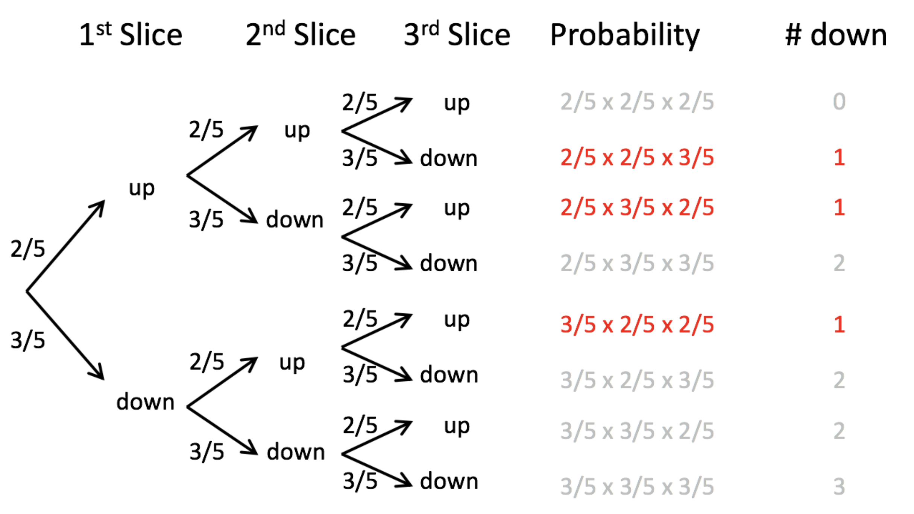
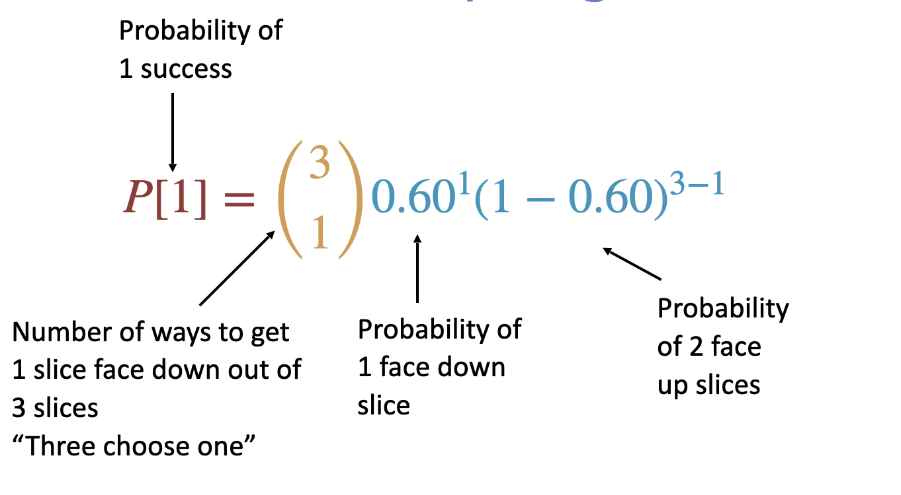
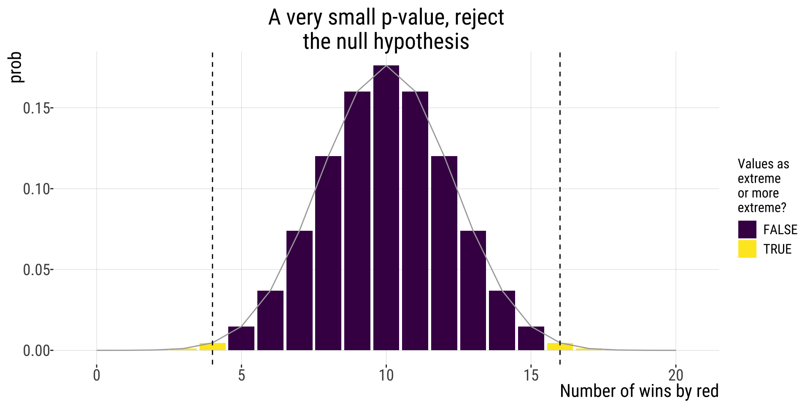

The binomial test
2026-11-13
Materials from the following sources were used for some of the slides and examples:
Chris Merkord’s awesome course website https://chrismerkord.github.io/biol-275/
Yaniv Brandvain’s course materials on github
Some examples from ABD WS
Thank you!
The probability of the outcome of interest (e.g., success) is p, and the probability of the alternative outcome is 1 − p. These are called a binary variable (or Bernoulli variable).
We record each observation as:
Each observation is a single trial with two possible results.
Examples:
To find the probabilities associated with outcomes of multiple Bernoulli trials, you use the binomial distribution.
Suppose we observe a binary outcome repeatedly.
Let:
\[ X = \text{nr. successes in } n \text{ trials} \]
Now we are no longer modeling a single 0/1 outcome.
We are modeling a count: how many successes occur in a fixed number of trials?

A dataset follows a binomial model if:
If these conditions hold, then:
\[ X \sim \text{Binomial}(n, p) \]
If:
\[ X \sim \text{Binomial}(n, p) \]
Then we can compute the probability of any specific number of successes:
\[ \operatorname{Pr}[X = x] \]
We need a formula that tells us:
For a binomial random variable:
\[ \operatorname{Pr}[X = x] = \binom{n}{x} p^{x} (1 - p)^{n - x} \]
Where:
\(\binom{n}{x}\): Binomial coefficient: describes the number of ways to get \(x\) successes in \(n\) trials (“\(n\) choose \(x\)”).
\(\binom {n}{x}=\frac{n!}{x!(n-x)!}\)
\(n!=n\times (n-1) \times (n-2) ...\times 2 \times 1\)
E.g. how many ways are there to toss 3 coins and get 1 tails (“3 choose 1”):
\[\binom {3}{1}=\frac{3!}{1!(2)!}\] \[\binom {3}{1}=3\] In R:
\(P[x]\): The probability of observing \(x\) successes in \(n\) trials EQUALS
\(\binom{n}{x}\): # ways to get \(x\) successes from \(n\) trials TIMES
\(p^X(1-p)^{n-x}\): The probability of \(X\) successes and by \(n – x\) failures.
Suppose that the probability of a toast falling butter side down in 0.60. If three people drop their slice of toast, what is the probability that one falls butter side down and two fall butter side up?
\(p = 0.60\) (success)
\(1-p= 0.4\) (failure)
We need \(Pr[X=1]\) in a binomial scenario with three trials and \(p=0.60\).

Count the ways to get the desired outcome \(3 \times (2/5\times 2/5\times 3/5)=0.288\)

We get: \(P[x=1]=\frac{n!}{x!(n-x)!}\times 0.60\times0.40^2=\frac{3\times 2}{1\times 2}\times 0.096=3\times0.096=0.288\)
“Manually”:
Dedicated function:
If there are \(x\) successes in \(n\) trials in a random sample, then the
estimated proportion of successes is:
\[\hat p = \frac{x}{n}\]
\(\hat p\): The hat signals that this is an estimate
\(p\): The expected proportion of successes is the probability of success p
Expected successes in \(n\) trials
\[\Huge{\mu = n \times p}\]
\(\mu\): That’s right. Mean number of successes, aka, expected number of successes.
Testing \(H_0\) that \(\hat p\) comes from a population with proportion \(p_0\).
Let’s use our wrestlers example:
Researchers found that 16 of the 20 rounds of wrestling in the 2004 Olympics were won by wrestlers wearing red (and 4 by those wearing blue). Colors were randomly assigned. What is the probability that we would see a result this or more extreme if red and blue-wearing wrestlers are equally likely to win?
State the hypotheses
Let’s define red win as “success”.
Null hypothesis (\(H_{0}\)): The sample comes from a population with a probability of success equal to \(p_0=0.5\).
Alternate hypothesis (\(H_{A}\)): The sample comes from a population with a probability of success \(\neq p_0\).
Our estimate of p is \(\hat p=16/20=0.8\) \(p_0 = 0.5\), \(n = 20\), \(x = 16\)
We previously calculated \(P[X=1]\), but we could also calculate \(P[X=x]\) for any value of \(x\). Together these probabilities form the binomial distribution.
| successes | prob |
|---|---|
| 0 | 9.536743e-07 |
| 1 | 1.907349e-05 |
| 2 | 1.811981e-04 |
| 18 | 1.811981e-04 |
| 19 | 1.907349e-05 |
| 20 | 9.536743e-07 |

Adding the two yellow tails gives us the two tailed \(P\)-value\(=0.005908966+0.005908966= 0.01181793\).
Actually calculating \(P\)-value would look like this:
Two-tailed \(P\)-value:
\(p = \sum_{X = 16}^{20} {20 \choose X} .5^{X} (.5)^{20-X}\)
\(+\)
\(\sum_{X = 0}^{4}{20 \choose X} .5^X (.5)^{20-X}\)
Two tailed \(P\)-value\(=0.005908966+0.005908966= 0.01181793\)
Assuming we had decided on \(\alpha = 0.05\), we reject \(H_0\) & conclude that red-wearing wrestlers win more often (at least based on this sample).
R can make this even easierred <- 16
blue <- 4
prop.red <- red/(red + blue)
# 'Manually'
sum(dbinom(x = 16:20, size = 20, prob = 0.5)) + sum(dbinom(x = 0:4, size = 20, prob = 0.5)) #p=0.01181793
## [1] 0.01181793
# Specialized function
binom.test(x = red, n = red + blue, p = 0.5, alternative = "two.sided")
##
## Exact binomial test
##
## data: red and red + blue
## number of successes = 16, number of trials = 20, p-value = 0.01182
## alternative hypothesis: true probability of success is not equal to 0.5
## 95 percent confidence interval:
## 0.563386 0.942666
## sample estimates:
## probability of success
## 0.8| Variance | \(\sigma^2=p(1-p)\) | |
| Standard deviation | \(\sigma=\sqrt{p(1-p)}\) | |
| Sample variance | \(s^2=\hat p(1- p)\frac{n}{n-1}\) | |
| Sample standard deviation | \(s=\sqrt{\hat p(1- p)}\frac{n}{n-1}\) |
The standard deviation of the sampling distribution of \(\hat p\) (designated by \(\sigma_{\hat p}\)) is
\[\sigma_{\hat p}=\sqrt{\frac{p(1-p)}{n}}\]
This is also called the standard error of \(p\). Because \(p\) is usually unknown, in practice we have:
\[SE_{\hat p}=\sqrt{\frac{\hat p(1-\hat p)}{n}}\] # Confidence Interval for a proportion (it’s not normal) {.center}
\[\bigg(p' - 1.96 \sqrt{\frac{p'(1-p')}{n+4}}\bigg) \leq p \leq \bigg(p' + 1.96 \sqrt{\frac{p'(1-p')}{n+4}}\bigg)\] , where:
\[p' = \frac{X+2}{n+4}\] , where \(X\) is the observed # of successes, and \(n\) is the sample size or number of trials.
\(\hat p = 16/20=0.8\)
Standard error of \(\hat p\):
\(SE_\hat{p}=\sqrt{\frac{0.8(1-0.8)}{20}}=0.0894472\)
Uses an adjusted estimate \(p'\) for constructing the interval
\[ p' = \frac{X + 2}{n + 4}\\=\frac{16+2}{20+4}\\=0.75 \]
\[ p' - 1.96 \sqrt{\frac{p'(1 - p')}{n + 4}}\;<\;p\;<\;p' + 1.96 \sqrt{\frac{p'(1 - p')}{n + 4}} \]
\[ 0.75 - 1.96 \sqrt{\frac{0.1875}{24}}\;<\;p\;<\;0.75 + 1.96 \sqrt{\frac{0.1875}{23}} \]
\[ 0.75 - 1.96 \times 0.08838835\;<\;p\;<\;0.75 + 1.96 \times 0.08838835 \]
\[ 0.577\;<\;p\;<\;0.9232412 \]
We estimated the proportion of red wins:
Now test:
\(H_0: p = 0.50\)
\(H_A: p \ne 0.50\)
Question:
Does 0.50 fall inside the 95% confidence interval?
Conclusion:
Because 0.50 is not in the interval, we would reject \(H_0\) at \(\alpha = 0.05\).
The data suggest the proportion of red wins differs from 50%.
library(binom) #specialized package
# return CI for several methods. We can confirm our manual calculation:
binom::binom.confint(x = 16, n = 20, conf.level = 0.95, method = "all")
## method x n mean lower upper
## 1 agresti-coull 16 20 0.8000000 0.5782364 0.9250885
## 2 asymptotic 16 20 0.8000000 0.6246955 0.9753045
## 3 bayes 16 20 0.7857143 0.6134811 0.9421974
## 4 cloglog 16 20 0.8000000 0.5511456 0.9198179
## 5 exact 16 20 0.8000000 0.5633860 0.9426660
## 6 logit 16 20 0.8000000 0.5721531 0.9228665
## 7 probit 16 20 0.8000000 0.5852912 0.9289199
## 8 profile 16 20 0.8000000 0.5946321 0.9331375
## 9 lrt 16 20 0.8000000 0.5946356 0.9331592
## 10 prop.test 16 20 0.8000000 0.5573138 0.9338938
## 11 wilson 16 20 0.8000000 0.5839826 0.9193423
binom::binom.confint(x = 16, n = 20, conf.level = 0.95, method = "agresti-coull")
## method x n mean lower upper
## 1 agresti-coull 16 20 0.8 0.5782364 0.9250885B215: Biostatistics with R